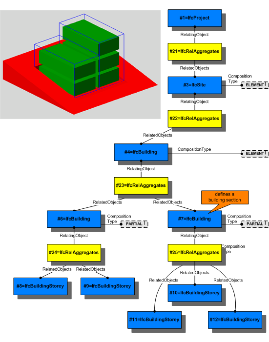

5.4.3.68 IfcSpatialStructureElement
ABSTRACT This definition may not be instantiated
5.4.3.68.1 Semantic definition
A spatial structure element is the generalization of all spatial elements that might be used to define a spatial structure. The spatial structure can be used to provide a spatial organization of a project.
A spatial project structure might define as many levels of decomposition as necessary for the project. Elements within the spatial project structure are:
- site as IfcSite
- facility as IfcFacility, or specifically
- building as IfcBuilding
- bridge as IfcBridge
- marine facility as IfcMarineFacility
- railway as IfcRailway
-
road as IfcRoad
-
facility part as IfcFacilityPart, or specifically
- storey as IfcBuildingStorey
-
facility part as IfcFacilityPart
-
space as IfcSpace
or aggregations or parts thereof. The composition type declares an element to be either an element itself, or an aggregation (complex) or a decomposition (part). The interpretation of these types is given at each subtype of IfcSpatialStructureElement.
The IfcRelAggregates is defined as an 1-to-many relationship and used to establish the relationship between exactly two levels within the spatial project structure. Finally the highest level of the spatial structure is assigned to IfcProject using the IfcRelAggregates.
The subtypes of IfcSpatialStructureElement relate to other elements and systems by establishing the following relationships:
- Containment of elements : IfcRelContainedInSpatialStructure by inverse attribute ContainsElements, used to assign any element, like building elements, MEP elements, etc. to the spatial structure element in which they are primarily contained.
- Reference of elements : IfcRelReferencedInSpatialStructure by inverse attribute ReferencesElements, used to reference any element, like building elements, MEP elements, etc. in spatial structure elements, other then the one, where it is contained. Since the deprecation of IfcRelServicesBuildings, IfcRelReferencedInSpatialStructure is also used to reference a system, like a building service or electrical distribution system, a zonal system, or a structural analysis system, that is assigned to this spatial structure element.
The subtypes of IfcSpatialStructureElement relate to each other by using the IfcRelAggregates relationship to build the project spatial structure. Figure A shows the use of IfcRelAggregates to establish a spatial structure including site, building, building section and storey. More information is provided at the level of the subtypes.

Informal Propositions
- The spatial project structure, established by the IfcRelAggregates, shall be acyclic.
- A site should not be (directly or indirectly) associated to a building, storey or space.
- A building should not be (directly or indirectly) associated to a storey or space.
- A storey should not be (directly or indirectly) associated to a space.
5.4.3.68.2 Entity inheritance
5.4.3.68.3 Attributes
| # | Attribute | Type | Description |
|---|---|---|---|
| IfcRoot (4) | |||
| 1 | GlobalId | IfcGloballyUniqueId |
Assignment of a globally unique identifier within the entire software world. |
| 2 | OwnerHistory | OPTIONAL IfcOwnerHistory |
Assignment of the information about the current ownership of that object, including owning actor, application, local identification and information captured about the recent changes of the object. |
| 3 | Name | OPTIONAL IfcLabel |
An optional name for use by the participating software systems or users. For some subtypes of IfcRoot the insertion of the Name attribute may be required. This would be enforced by a where rule. |
| 4 | Description | OPTIONAL IfcText |
An optional description, provided to exchange informative comments. |
| IfcObjectDefinition (7) | |||
| Decomposes | SET [0:1] OF IfcRelAggregates FOR RelatedObjects |
References to the decomposition relationship being an aggregation. It determines that this object definition is a part within an unordered whole/part decomposition relationship. An object definition can only be part of a single decomposition (to allow hierarchical structures only). |
|
| HasAssignments | SET [0:?] OF IfcRelAssigns FOR RelatedObjects |
Reference to the relationship objects, that assign (by an association relationship) other subtypes of IfcObject to this object instance. Examples are the association to products, processes, controls, resources or groups. |
|
| HasAssociations | SET [0:?] OF IfcRelAssociates FOR RelatedObjects |
Reference to the relationship objects, that associates external references or other resource definitions to the object. Examples are the association to library, documentation or classification. |
|
| HasContext | SET [0:1] OF IfcRelDeclares FOR RelatedDefinitions |
References to the context providing context information such as project unit or representation context. It should only be asserted for the uppermost non-spatial object. |
|
| IsDecomposedBy | SET [0:?] OF IfcRelAggregates FOR RelatingObject |
References to the decomposition relationship being an aggregation. It determines that this object definition is the whole within an unordered whole/part decomposition relationship. An object definition can be aggregated by several other objects (occurrences or parts). |
|
| IsNestedBy | SET [0:?] OF IfcRelNests FOR RelatingObject |
References to the decomposition relationship being a nesting. It determines that this object definition is the whole within an ordered whole/part decomposition relationship. An object or object type can be nested by several other objects (occurrences or types). |
|
| Nests | SET [0:1] OF IfcRelNests FOR RelatedObjects |
References to the decomposition relationship being a nesting. It determines that this object definition is a part within an ordered whole/part decomposition relationship. An object occurrence or type can only be part of a single decomposition (to allow hierarchical structures only). |
|
| IfcObject (5) | |||
| 5 | ObjectType | OPTIONAL IfcLabel |
The type denotes a particular type that indicates the object further. The use has to be established at the level of instantiable subtypes. In particular it holds the user defined type, if the enumeration of the attribute PredefinedType is set to USERDEFINED or when the concrete entity instantiated does not have a PredefinedType attribute. The latter is the case in some exceptional leaf classes and when instantiating IfcBuiltElement directly. |
| Declares | SET [0:?] OF IfcRelDefinesByObject FOR RelatingObject |
Link to the relationship object pointing to the reflected object(s) that receives the object definitions. The reflected object has to be part of an object occurrence decomposition. The associated IfcObject, or its subtypes, provides the specific information (as part of a type, or style, definition), that is common to all reflected instances of the declaring IfcObject, or its subtypes. |
|
| IsDeclaredBy | SET [0:1] OF IfcRelDefinesByObject FOR RelatedObjects |
Link to the relationship object pointing to the declaring object that provides the object definitions for this object occurrence. The declaring object has to be part of an object type decomposition. The associated IfcObject, or its subtypes, contains the specific information (as part of a type, or style, definition), that is common to all reflected instances of the declaring IfcObject, or its subtypes. |
|
| IsDefinedBy | SET [0:?] OF IfcRelDefinesByProperties FOR RelatedObjects |
Set of relationships to property set definitions attached to this object. Those statically or dynamically defined properties contain alphanumeric information content that further defines the object. |
|
| IsTypedBy | SET [0:1] OF IfcRelDefinesByType FOR RelatedObjects |
Set of relationships to the object type that provides the type definitions for this object occurrence. The then associated IfcTypeObject, or its subtypes, contains the specific information (or type, or style), that is common to all instances of IfcObject, or its subtypes, referring to the same type. |
|
| IfcProduct (5) | |||
| 6 | ObjectPlacement | OPTIONAL IfcObjectPlacement |
This establishes the object coordinate system and placement of the product in space. The placement can either be absolute (relative to the world coordinate system), relative (relative to the object placement of another product), or constrained (e.g. relative to grid axes, or to a linear positioning element). The type of placement is determined by the various subtypes of IfcObjectPlacement. An object placement must be provided if a representation is present. |
| 7 | Representation | OPTIONAL IfcProductRepresentation |
Reference to the representations of the product, being either a representation (IfcProductRepresentation) or as a special case of a shape representation (IfcProductDefinitionShape). The product definition shape provides for multiple geometric representations of the shape property of the object within the same object coordinate system, defined by the object placement. |
| PositionedRelativeTo | SET [0:?] OF IfcRelPositions FOR RelatedProducts |
Reference to the IfcRelPositions relationship, which defines its relationship with a positioning element. |
|
| ReferencedBy | SET [0:?] OF IfcRelAssignsToProduct FOR RelatingProduct |
Reference to the IfcRelAssignsToProduct relationship, by which other products, processes, controls, resources or actors (as subtypes of IfcObjectDefinition) can be related to this product. |
|
| ReferencedInStructures | SET [0:?] OF IfcRelReferencedInSpatialStructure FOR RelatedElements |
Reference to the objectified relationship IfcRelReferencedInSpatialStructure may be used to relate a product to one or more spatial structure elements in addition to the one in which it is primarily contained. |
|
| IfcSpatialElement (6) | |||
| 8 | LongName | OPTIONAL IfcLabel |
Long name for a spatial structure element, used for informal purposes. It should be used, if available, in conjunction with the inherited Name attribute. |
| ContainsElements | SET [0:?] OF IfcRelContainedInSpatialStructure FOR RelatingStructure |
Set of spatial containment relationships, that holds those elements, which are contained within this element of the project spatial structure. |
|
| InterferesElements | SET [0:?] OF IfcRelInterferesElements FOR RelatingElement |
Reference to the interference relationship to indicate the spatial element that interferes. The relationship, if provided, indicates that this spatial element has an interference with one or many other spatial elements. |
|
| IsInterferedByElements | SET [0:?] OF IfcRelInterferesElements FOR RelatedElement |
Reference to the interference relationship to indicate the spatial element that is interfered. The relationship, if provided, indicates that this spatial element has an interference with one or many other spatial elements. |
|
| ReferencesElements | SET [0:?] OF IfcRelReferencedInSpatialStructure FOR RelatingStructure |
Set of spatial reference relationships, that holds those elements, which are referenced, but not contained, within this element of the project spatial structure. |
|
| ServicedBySystems | SET [0:?] OF IfcRelServicesBuildings FOR RelatedBuildings |
Set of relationships to systems, that provides a certain service to the spatial element for which it is defined. The relationship is handled by the objectified relationship IfcRelServicesBuildings. |
|
| Click to show 27 hidden inherited attributes Click to hide 27 inherited attributes | |||
| IfcSpatialStructureElement (1) | |||
| 9 | CompositionType | OPTIONAL IfcElementCompositionEnum |
Denotes, whether the predefined spatial structure element represents itself, or an aggregate (complex) or a part (part). The interpretation is given separately for each subtype of spatial structure element. If no CompositionType is asserted, the default value ''ELEMENT'' applies. |
5.4.3.68.4 Formal propositions
| Name | Description |
|---|---|
| WR41 |
All spatial structure elements shall be associated (using the IfcRelAggregates relationship) with another spatial structure element, or with IfcProject. |
|
|
5.4.3.68.5 Formal representation
ENTITY IfcSpatialStructureElement
ABSTRACT SUPERTYPE OF (ONEOF
(IfcBuildingStorey
,IfcFacility
,IfcFacilityPart
,IfcSite
,IfcSpace))
SUBTYPE OF (IfcSpatialElement);
CompositionType : OPTIONAL IfcElementCompositionEnum;
WHERE
WR41 : (HIINDEX(SELF\IfcObjectDefinition.Decomposes) = 1)
AND
('IFC4X3_ADD2.IFCRELAGGREGATES' IN TYPEOF(SELF\IfcObjectDefinition.Decomposes[1]))
AND
(('IFC4X3_ADD2.IFCPROJECT' IN TYPEOF (SELF\IfcObjectDefinition.Decomposes[1].RelatingObject)) OR
('IFC4X3_ADD2.IFCSPATIALSTRUCTUREELEMENT' IN TYPEOF (SELF\IfcObjectDefinition.Decomposes[1].RelatingObject))
);
END_ENTITY;